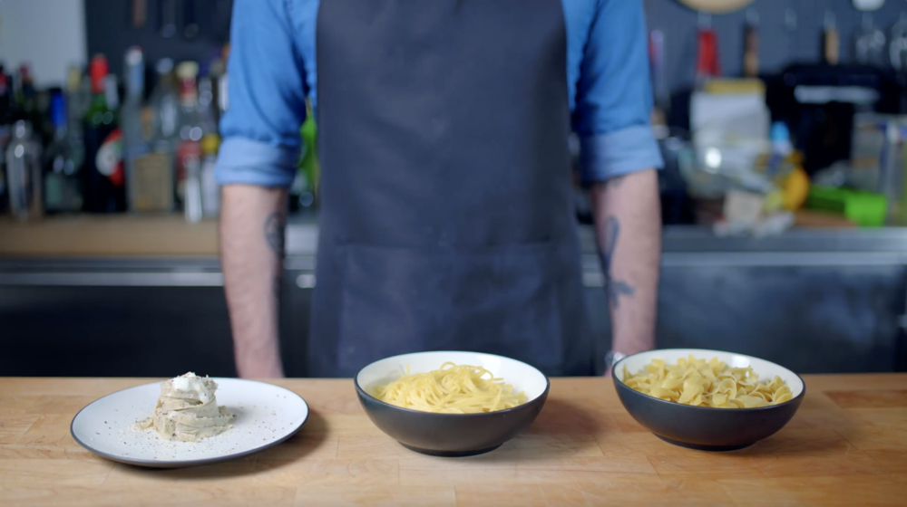

Buttered Noodles inspired by Community

DESCRIPTION
As seen in the world of Dan Harmon's lovable, irreverent collegiate caricature: Community,
I'm here to defend the "weird" favorite food of Abed Nadir: buttered noodles.
Yes, that impossibly plain side dish/cafeteria filler/thing you eat when you're sick.
With a few simple tricks, we can upgrade this ubiquitous underdog into something worth making all on its own.
INGREDIENTS
- 5 Minute Buttered Noodles Ingredients:
- 1 box egg noodles
- 2 Tbsp unsalted butter
- Kosher salt
- Freshly ground pepper
- 15 Minute (Better) Buttered Noodles Ingredients:
- 1 box high end supermarket pasta
- Gourmet butter
- Kosher salt
- Freshly ground pepper
- Butter from Scratch Ingredients:
- 4 cups heavy cream
- ½ cup cultured buttermilk
- European butter
- Homemade Pasta Ingredients:
- 12.8 oz 00 flour
- 3.2 oz rye flour
- 2 tsp kosher salt
- 3 large eggs
METHOD
- 5 Minute Buttered Noodles Ingredients:
- Start by bringing a pot of lightly salted water to a boil.
Add egg noodles and remove from the heat once tender.
- Drain the noodles and rinse with tap water before adding the noodles back to the pot.
Add 2 tablespoons of unsalted butter, a pinch of kosher salt and freshly ground black pepper.
- Mix until the butter has completely melted and the seasoning has mixed evenly across the noodles.
- 15 Minute (Better) Buttered Noodles Ingredients:
- Start by bringing an oval-shaped dutch oven of slightly salted water to a boil and then add the high-end pasta.
**Use slightly less water to make sure the water is extra starchy.
- Once the pasta is done, put aside about ½ cup of the water and then drain the pasta.
Return it to the warm pot and do not rinse.
- Add 2 tablespoons of the unsalted gourmet butter, ¼ cup of the pasta water, and a generous pinch of kosher salt.
- Give it all a rigorous stir until everything is completely dissolved and mixed together.
- Butter from Scratch Ingredients:
- Start by combining 4 cups of heavy cream with ½ cup of cultured buttermilk, whisking to combine then covering to let sit out at room temperature for 24 hours.
- After 24 hours, dump the mixture (which is now creme fraiche) into a stand mixer along with equal parts of room temperature European butter and whip together until all the milk fat separates from the newly minted buttermilk, should only take 15 seconds.
- Once a butter lump is formed, wash it in ice water 4-5 times until the water squeezed out of the butter runs clear.
Squeeze out as much water as possible then place it in the fridge.
- Homemade Pasta Method:
- In a large bowl add 80% double zero flour (12.8 oz), 20% rye flour (3.2 oz), 2 teaspoons of kosher salt, and 3 large eggs.
Beat together using a fork and knead for 8-10 minutes.
- Place the dough in a Ziploc bag or cover with plastic wrap and let it rest at room temperature for at least 30 minutes.
- After 30 minutes, cut the dough into smaller pieces then run through a pasta roller 3-4 times.
Make sure to fold into thirds after each time through.
- Once the desired thinness has been reached, run the thin sheet of pasta through a pasta cutter set for fettuccine style pasta.
- On a well-floured rimmed baking sheet, drape the pasta into small nests and give each nest a nice dusting of flour.
- Homemade Buttered Noodles Cooking Method:
- Once ready to cook, place the pasta into a large pot of a small amount of boiling water and let it cook for 90 seconds.
During the 90 seconds, make sure to keep a saute pan warm, not hot.
- After 90 seconds, place the cooked pasta into the warm saute pan along with 3 tablespoons of homemade butter, ¼ cup of pasta water, a pinch of kosher salt, and mixing together rigorously.
- Once the butter sauce has reached an Alfredo-like consistency, place on a plate with a dollop of the creme fraiche, an optional grating of brewers yeast, and enjoy.
Check out this link for the source
Go back to Main Page